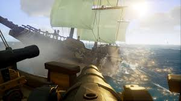

Sea of Thieves Combat
Weapons
A player begins the game with 4 different weapons to choose from, you are only allowed to carry two at a time so it is necessary to find the right weapons for you. The players options include the blunderbuss, pistol, sniper rifle, and the cutlass. In certain missions, players are able to find powerful skulls that provide a magical power such as fire breathing or sirens song. Although you cannot keep the skulls forever, they help tremendously to eradicate any pesky pirates trying to steal your loot.

Ship weapons
Depending on the ship, players begin the game with 2-8 cannons on their ship. The ships vary in size depending on your ship. The smallest ship is called the Sloop, a 2 person ship designed to be quick and maneuverable. The medium ship is called the Brigantine, a 3 person ship designed similar to the Sloop but with more cargo space. Finally you have the Galleon, a 4 person ship containing 4 cannons on each side, the galleon makes up for it's lack of speed with it's superior firepower. All ships also offer at least 2 harpoon guns mainly used for collecting items from the water or in some cases to attach to an enemy ship.
